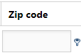

Go, via the menu, to Settings > Addresses.
If you do not see this setting, open an archive first.
Group by dragging one or more column headers above the grid. You can also move them back to the grid.
Sort (ascending/descending) by clicking in the column header once.
Select
 for more information per shown result.
for more information per shown result.
Select
 to hide this information again.
to hide this information again.
Filter within a column with a search query. Select
 for all search options.
for all search options.

Edit Address
Select
 (Edit) next to an address to edit it.
(Edit) next to an address to edit it.
Adjust the fields and select Save.
Delete Address
Select
 (Delete) next to an address to delete it.
(Delete) next to an address to delete it.
Confirm with OK.
Copy Address
Select
 (Copy) next to an address to copy it.
(Copy) next to an address to copy it.
Edit, when needed, one or more fields and select Save.
Attention: By default, copy is not available (key="EnableRegistrationCopying=false").
Please contact your Administrator for activation (set key to true).